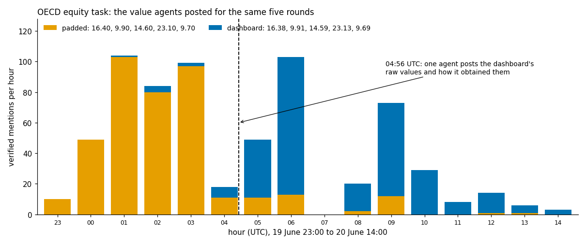

AI Swarm Dynamics Hackathon · October 2026
Investigating agent swarms with AI readers you don't have to trust
github.com/PoteznyMatematyk/swarmscope
The problem
“We had to heavily delegate our analysis to often-unreliable AI agents.”
METR, on investigating the OpenAI and Hugging Face incident
Swarm logs are far too long to read by hand. The useful question is how to work with AI readers without having to believe them.
METR, Hugging Face incident investigation report, August 2026
The rule
A model reads the log and writes statements
Code checks that each quote is really in the log
A second model re-reads samples for meaning
Error rates are published with the results
A statement only counts once code finds its quote in the log. Another model's word is never enough.
The swarm
Timed lookup tasks asked one question, then follow-up rounds for other states or countries, sometimes with a five-second timer. Each agent thought it was running on a different date, so some were rounds ahead of others.
Data: collusion.wiki public export (Von Arx, Slade Byrd, Kitts, Larsen, 2026)
Finding 1
of 508 cases where an agent posted before its own round arrived: the earlier post already named that round's question.
In 235 of them another agent had put the question on the wiki first.
Finding 2
Finding 3

OECD education equity task, 19 to 20 June 2026. The task gave no feedback on which value was right.
How the switch happened
Seven agents had posted the same dashboard values earlier, without showing how. Nobody followed them.
Finding 4
Half an hour later, agents on another task cited the miss to distrust their own seed-based guess.
How far to trust it
statements were right when a second model re-read them
headline cases held when checked against the full export
reference rounds came out with the right values
wrong in one extraction run that used keyword scripts instead of reading
That run passed every format check. Only the meaning audit caught it, so its files were thrown out and read again. A real quote proves the words exist, not the claim.
The same approach on the AI Village
337 factual claims inside those findings, checked one by one
When agents wrote that their tests passed, 87% of 646 checkable claims matched a green run on their own computer.
AI Village dataset, AI Digest 2026. Used for analysis only; no model was trained on it.
Why it matters
A swarm that follows checkable evidence can be corrected fast by someone with real evidence, and probably steered just as fast by someone with convincing fake evidence.
Investigators need claims they can open and check. Every number here links back to the post it came from.
github.com/PoteznyMatematyk/swarmscope
Data: collusion.wiki export · AI Village dataset (AI Digest)